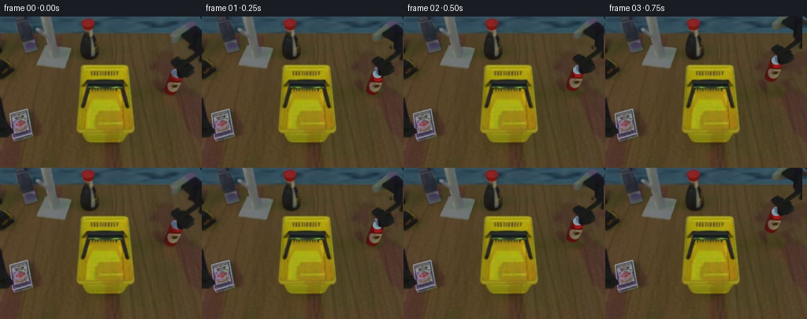
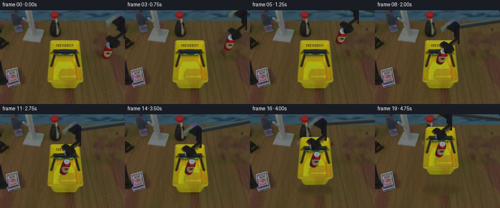

CODING AGENTS AS PIXEL WORLD MODELS
traex/GPT-6.1-Sol · common50_0047
点击播放 · 原生 RGB 像素
此结果可播放，但该运行尚未通过最终提交审核。页面展示不代表评测通过。
逐轮保存的候选
回放视频、检查图与代码变化。
每份候选均可单独播放。实际图片检查记录在下方工具轨迹中。
候选 01播放与检查图
点击播放 · 原生 RGB 像素


展开代码变化
--- 上一保存版本
+++ 本次保存版本
@@ -0,0 +1,148 @@
+from pathlib import Path
+import math
+import numpy as np
+from PIL import Image, ImageDraw, ImageFilter
+import artifact_io
+
+ROOT = Path(__file__).resolve().parent
+im = Image.open(ROOT/'first_frame.png').convert('RGB')
+A = np.array(im)
+W,H = im.size
+S=4
+
+def mask_polys(polys, blur=.35):
+ m=Image.new('L',(W*S,H*S),0); d=ImageDraw.Draw(m)
+ for p in polys: d.polygon([(round(x*S),round(y*S)) for x,y in p],fill=255)
+ m=m.resize((W,H),Image.Resampling.LANCZOS)
+ if blur: m=m.filter(ImageFilter.GaussianBlur(blur))
+ return m
+
+arm_polys=[
+ [(217,26),(239,7),(245,6),(255,12),(260,18),(260,57),(251,59),(244,44),(245,35),(235,29),(222,34),(217,31)],
+ [(253,42),(260,44),(260,51),(234,67),(227,62)],
+ [(224,52),(231,55),(234,59),(240,61),(244,65),(246,71),(241,75),(233,78),(226,77),(222,74),(221,69),(217,64),(215,61),(216,57)]
+]
+arm_mask=mask_polys(arm_polys,.32)
+arm=im.convert('RGBA'); arm.putalpha(arm_mask)
+can_poly=[(218,68),(227,69),(230,74),(230,81),(224,96),(219,100),(213,100),(208,96),(209,88),(213,76)]
+can_mask=mask_polys([can_poly],.25)
+# Reconstruct the small portion of the can hidden by the fingers from its own paint and lid.
+can = im.convert('RGBA'); can.putalpha(can_mask)
+canh=can.resize((W*S,H*S),Image.Resampling.BICUBIC); d=ImageDraw.Draw(canh)
+# Aluminum lid is a planar, elliptical top; source label and shading are retained.
+def poly_scaled(p,fill): d.polygon([(x*S,y*S) for x,y in p],fill=fill)
+poly_scaled([(220,70),(229,73),(226,82),(220,82),(218,76)],(153,25,27,255))
+d.ellipse((217*S,68.3*S,229*S,78*S),fill=(129,153,162,255))
+d.arc((217.7*S,69*S,228.3*S,77.3*S),195,355,fill=(166,183,188,255),width=2)
+d.ellipse((221.6*S,71*S,225.6*S,74.5*S),fill=(108,126,131,255))
+d.line((222*S,72*S,225*S,73*S),fill=(167,178,179,255),width=2)
+can=canh.resize((W,H),Image.Resampling.LANCZOS)
+can.putalpha(can_mask)
+
+# Remove the moving parts using texture from unoccupied portions of the same tabletop.
+rem=Image.fromarray(np.maximum(np.asarray(arm_mask),np.asarray(can_mask))).filter(ImageFilter.MaxFilter(7)).filter(ImageFilter.GaussianBlur(1.2))
+m=np.asarray(rem)/255.
+Y,X=np.mgrid[:H,:W]
+sx=np.clip((187+(X-210)*.52).astype(int),181,212)
+fill=A[Y,sx].copy().astype(float)
+# Only the existing workspace image supplies all background grain.
+base=np.clip(A*(1-m[:,:,None])+fill*m[:,:,None],0,255).astype(np.uint8)
+base=Image.fromarray(base)
+
+basket_poly=[(107,61.5),(156,61.5),(162,64),(165,80),(169,130),(171,140),(169,145),(162,149),(158,154),(153,159),(110,160),(106,156),(102,149),(98,146),(96,140),(98,113),(100,83),(102,66)]
+basket_mask=mask_polys([basket_poly],.45)
+basket=im.convert('RGBA'); basket.putalpha(basket_mask)
+# Clean tabletop revealed by lifting the basket. Continue the tabletop's wood grain.
+# Use scanline boundary color with high frequency texture from the clear wood on the left.
+bm=np.asarray(basket_mask.filter(ImageFilter.MaxFilter(15)).filter(ImageFilter.GaussianBlur(2.2)))/255.
+bga=np.array(base).astype(float)
+left=np.array(im)[:,78:94,:].mean(axis=1)
+right=np.array(im)[:,180:195,:].mean(axis=1)
+rng=np.random.default_rng(42)
+lefttex=np.asarray(im)[:,55:95,:].astype(float)
+lefttex=lefttex-lefttex.mean(axis=1,keepdims=True)
+wood=np.zeros_like(bga)
+for x in range(W):
+ t=np.clip((x-94)/83,0,1)
+ wood[:,x,:]=(1-t)*left+t*right+0.65*lefttex[:,(x-96)%40,:]
+# Plank edge visible below the basket continues under it.
+line=np.exp(-((X-143.5)/1.0)**2)[:,:,None]
+wood-=line*np.array([7,5,3])
+clean=Image.fromarray(np.uint8(np.clip(bga*(1-bm[:,:,None])+wood*bm[:,:,None],0,255)))
+
+def translated(layer, dx,dy):
+ return layer.transform((W,H),Image.Transform.AFFINE,(1,0,-dx,0,1,-dy),Image.Resampling.BICUBIC)
+
+def shadow(canvas, center, radii, opacity):
+ lay=Image.new('RGBA',(W*S,H*S));d=ImageDraw.Draw(lay)
+ x,y=center;rx,ry=radii
+ d.ellipse(((x-rx)*S,(y-ry)*S,(x+rx)*S,(y+ry)*S),fill=(21,19,11,int(opacity)))
+ lay=lay.filter(ImageFilter.GaussianBlur(3*S)).resize((W,H),Image.Resampling.LANCZOS)
+ return Image.alpha_composite(canvas,lay)
+
+# A two-link rigid support, anchored beyond the upper right of the frame,
+# carries the original wrist/tool assembly. All link lengths are invariant.
+base_joint=np.array([330.,-140.])
+L1,L2=161.,123.
+def elbow_for(end):
+ vec=np.array(end)-base_joint;D=np.linalg.norm(vec);u=vec/D
+ a=(L1*L1-L2*L2+D*D)/(2*D)
+ h=math.sqrt(max(0,L1*L1-a*a));p=base_joint+a*u
+ v=np.array([u[1],-u[0]])
+ return p+h*v
+
+def rigid_support(canvas,dx,dy):
+ end=np.array([252.,23.])+np.array([dx,dy])
+ elbow=elbow_for(end)
+ layer=Image.new('RGBA',(W*S,H*S),0);d=ImageDraw.Draw(layer)
+ def beam(p,q,width):
+ p=np.asarray(p);q=np.asarray(q);v=q-p;v=v/np.linalg.norm(v);n=np.array([-v[1],v[0]])
+ # Box faces under diffuse overhead light.
+ outline=[p+n*width/2,q+n*width/2,q-n*width/2,p-n*width/2]
+ d.polygon([tuple(pt*S) for pt in outline],fill=(38,42,43,255))
+ edge=[p+n*width/2,q+n*width/2,q+n*(width/2-2),p+n*(width/2-2)]
+ d.polygon([tuple(pt*S) for pt in edge],fill=(78,84,83,255))
+ inner=[p+n*(width/2-2),q+n*(width/2-2),q+n*(width/2-4),p+n*(width/2-4)]
+ d.polygon([tuple(pt*S) for pt in inner],fill=(52,59,59,255))
+ for point in [p,q]:
+ x,y=point;d.ellipse(((x-6)*S,(y-6)*S,(x+6)*S,(y+6)*S),fill=(39,42,42,255))
+ d.ellipse(((x-2)*S,(y-2)*S,(x+2)*S,(y+2)*S),fill=(72,76,76,255))
+ beam(base_joint,elbow,12)
+ beam(elbow,end,9)
+ layer=layer.resize((W,H),Image.Resampling.LANCZOS).filter(ImageFilter.GaussianBlur(.25))
+ return Image.alpha_composite(canvas,layer)
+
+# Smooth acceleration: pick, lift clear, carry, lower, release, regrip, lift basket.
+poses=[(0,0),(-1,-2),(-2,-5),(-6,-17),(-16,-26),(-33,-30),(-52,-25),(-71,-10),(-83,11),(-86,24),(-86,24),(-90,8),(-96,-7),(-99,11),(-99,11),(-99,5),(-99,-4),(-98,-14),(-98,-21),(-98,-25)]
+frames=[np.array(im)]
+for i in range(1,20):
+ dx,dy=poses[i]
+ lift=max(0,11-dy) if i>=15 else 0
+ bx=(dx+99) if i>=15 else 0
+ canvas=(clean if lift else base).convert('RGBA')
+ if lift:
+ canvas=shadow(canvas,(134+bx,154),(35+lift*.12,9+lift*.035),68-lift*.65)
+ canvas=Image.alpha_composite(canvas,translated(basket,bx,-lift))
+ if i<10:
+ cx,cy=dx,dy
+ if i==1:cx,cy=0,0
+ else:
+ cx,cy=-86+bx,24-lift
+ # Can cast shadow onto the floor while carried and into basket when deposited.
+ if i<8:
+ canvas=shadow(canvas,(218+cx,98),(9+(max(0,-cy))*.15,3+max(0,-cy)*.08),max(8,39+cy))
+ else:
+ canvas=shadow(canvas,(216+cx,98+cy),(9,3),27)
+ canvas=Image.alpha_composite(canvas,translated(can,cx,cy))
+ canvas=rigid_support(canvas,dx,dy)
+ canvas=Image.alpha_composite(canvas,translated(arm,dx,dy))
+ frames.append(np.array(canvas.convert('RGB')))
+frames=np.stack(frames).astype(np.uint8)
+assert np.array_equal(frames[0],A)
+artifact_io.save(frames,ROOT)
+# Keep a full candidate contact sheet for local quality control.
+sheet=Image.new('RGB',(W*5,(H+20)*4),(22,24,27));d=ImageDraw.Draw(sheet)
+for i,f in enumerate(frames):
+ x=(i%5)*W;y=(i//5)*(H+20)
+ d.text((x+4,y+3),str(i),fill='white');sheet.paste(Image.fromarray(f),(x,y+20))
+sheet.save(ROOT/'.tmp/all_frames.png')
候选 02播放与检查图
点击播放 · 原生 RGB 像素

展开代码变化
--- 上一保存版本
+++ 本次保存版本
@@ -19,10 +19,18 @@
arm_polys=[
[(217,26),(239,7),(245,6),(255,12),(260,18),(260,57),(251,59),(244,44),(245,35),(235,29),(222,34),(217,31)],
+ [(240,34),(249,35),(255,42),(255,52),(247,52),(241,47),(237,43)],
[(253,42),(260,44),(260,51),(234,67),(227,62)],
[(224,52),(231,55),(234,59),(240,61),(244,65),(246,71),(241,75),(233,78),(226,77),(222,74),(221,69),(217,64),(215,61),(216,57)]
]
arm_mask=mask_polys(arm_polys,.32)
+# The original tool occludes the can. Keep metal/plastic tool pixels, not the
+# exposed silver lid or red paint along their shared silhouette.
+am=np.array(arm_mask)
+yy,xx=np.mgrid[:H,:W]
+can_edge=(yy>=67)&(yy<=79)&(xx>=215)&(xx<=231)&(((A[:,:,2].astype(float)>A[:,:,0]*1.18)&(A.sum(axis=2)>190))|((A[:,:,0].astype(float)>A[:,:,1]*1.65)&(A[:,:,0]>70)))
+am[can_edge]=0
+arm_mask=Image.fromarray(am)
arm=im.convert('RGBA'); arm.putalpha(arm_mask)
can_poly=[(218,68),(227,69),(230,74),(230,81),(224,96),(219,100),(213,100),(208,96),(209,88),(213,76)]
can_mask=mask_polys([can_poly],.25)
@@ -109,7 +117,7 @@
d.ellipse(((x-2)*S,(y-2)*S,(x+2)*S,(y+2)*S),fill=(72,76,76,255))
beam(base_joint,elbow,12)
beam(elbow,end,9)
- layer=layer.resize((W,H),Image.Resampling.LANCZOS).filter(ImageFilter.GaussianBlur(.25))
+ layer=layer.resize((W,H),Image.Resampling.LANCZOS).filter(ImageFilter.GaussianBlur(.5))
return Image.alpha_composite(canvas,layer)
# Smooth acceleration: pick, lift clear, carry, lower, release, regrip, lift basket.
可观测工具轨迹
实际执行的命令与返回图片。
命令 1exit 0
/bin/bash -lc "ls -la && cat prompt.txt && printf '\\n--- RULES ---\\n' && cat GENERATION_RULES.md"
命令 2exit 0
/bin/bash -lc "cat task_spec.json && cat artifact_io.py && python - <<'PY'
from PIL import Image
im=Image.open('first_frame.png'); im.resize((1024,768)).save('.tmp/first_large.png')
PY"命令 3exit 0
/bin/bash -lc "python - <<'PY'
from PIL import Image
im=Image.open('first_frame.png');im.crop((90,50,180,170)).resize((540,720)).save('.tmp/basket.png');im.crop((197,0,256,110)).resize((354,660)).save('.tmp/arm.png')
PY"命令 4exit 0
/bin/bash -lc "cat > generate.py <<'PY'
from pathlib import Path
import math
import numpy as np
from PIL import Image, ImageDraw, ImageFilter
import artifact_io
ROOT = Path(__file__).resolve().parent
im = Image.open(ROOT/'first_frame.png').convert('RGB')
A = np.array(im)
W,H = im.size
S=4
def mask_polys(polys, blur=.35):
m=Image.new('L',(W*S,H*S),0); d=ImageDraw.Draw(m)
for p in polys: d.polygon([(round(x*S),round(y*S)) for x,y in p],fill=255)
m=m.resize((W,H),Image.Resampling.LANCZOS)
if blur: m=m.filter(ImageFilter.GaussianBlur(blur))
return m
arm_polys=[
[(217,26),(239,7),(245,6),(255,12),(260,18),(260,57),(251,59),(244,44),(245,35),(235,29),(222,34),(217,31)],
[(253,42),(260,44),(260,51),(234,67),(227,62)],
[(224,52),(231,55),(234,59),(240,61),(244,65),(246,71),(241,75),(233,78),(226,77),(222,74),(221,69),(217,64),(215,61),(216,57)]
]
arm_mask=mask_polys(arm_polys,.32)
arm=im.convert('RGBA'); arm.putalpha(arm_mask)
can_poly=[(218,68),(227,69),(230,74),(230,81),(224,96),(219,100),(213,100),(208,96),(209,88),(213,76)]
can_mask=mask_polys([can_poly],.25)
# Reconstruct the small portion of the can hidden by the fingers from its own paint and lid.
can = im.convert('RGBA'); can.putalpha(can_mask)
canh=can.resize((W*S,H*S),Image.Resampling.BICUBIC); d=ImageDraw.Draw(canh)
# Aluminum lid is a planar, elliptical top; source label and shading are retained.
def poly_scaled(p,fill): d.polygon([(x*S,y*S) for x,y in p],fill=fill)
poly_scaled([(220,70),(229,73),(226,82),(220,82),(218,76)],(153,25,27,255))
d.ellipse((217*S,68.3*S,229*S,78*S),fill=(129,153,162,255))
d.arc((217.7*S,69*S,228.3*S,77.3*S),195,355,fill=(166,183,188,255),width=2)
d.ellipse((221.6*S,71*S,225.6*S,74.5*S),fill=(108,126,131,255))
d.line((222*S,72*S,225*S,73*S),fill=(167,178,179,255),width=2)
can=canh.resize((W,H),Image.Resampling.LANCZOS)
can.putalpha(can_mask)
# Remove the moving parts using texture from unoccupied portions of the same tabletop.
rem=Image.fromarray(np.maximum(np.asarray(arm_mask),np.asarray(can_mask))).filter(ImageFilter.MaxFilter(7)).filter(ImageFilter.GaussianBlur(1.2))
m=np.asarray(rem)/255.
Y,X=np.mgrid[:H,:W]
sx=np.clip((187+(X-210)*.52).astype(int),181,212)
fill=A[Y,sx].copy().astype(float)
# Only the existing workspace image supplies all background grain.
base=np.clip(A*(1-m[:,:,None])+fill*m[:,:,None],0,255).astype(np.uint8)
base=Image.fromarray(base)
basket_poly=[(107,61.5),(156,61.5),(162,64),(165,80),(169,130),(171,140),(169,145),(162,149),(158,154),(153,159),(110,160),(106,156),(102,149),(98,146),(96,140),(98,113),(100,83),(102,66)]
basket_mask=mask_polys([basket_poly],.45)
basket=im.convert('RGBA'); basket.putalpha(basket_mask)
# Clean tabletop revealed by lifting the basket. Continue the tabletop's wood grain.
# Use scanline boundary color with high frequency texture from the clear wood on the left.
bm=np.asarray(basket_mask.filter(ImageFilter.MaxFilter(15)).filter(ImageFilter.GaussianBlur(2.2)))/255.
bga=np.array(base).astype(float)
left=np.array(im)[:,78:94,:].mean(axis=1)
right=np.array(im)[:,180:195,:].mean(axis=1)
rng=np.random.default_rng(42)
lefttex=np.asarray(im)[:,55:95,:].astype(float)
lefttex=lefttex-lefttex.mean(axis=1,keepdims=True)
wood=np.zeros_like(bga)
for x in range(W):
t=np.clip((x-94)/83,0,1)
wood[:,x,:]=(1-t)*left+t*right+0.65*lefttex[:,(x-96)%40,:]
# Plank edge visible below the basket continues under it.
line=np.exp(-((X-143.5)/1.0)**2)[:,:,None]
wood-=line*np.array([7,5,3])
clean=Image.fromarray(np.uint8(np.clip(bga*(1-bm[:,:,None])+wood*bm[:,:,None],0,255)))
def translated(layer, dx,dy):
return layer.transform((W,H),Image.Transform.AFFINE,(1,0,-dx,0,1,-dy),Image.Resampling.BICUBIC)
def shadow(canvas, center, radii, opacity):
lay=Image.new('RGBA',(W*S,H*S));d=ImageDraw.Draw(lay)
x,y=center;rx,ry=radii
d.ellipse(((x-rx)*S,(y-ry)*S,(x+rx)*S,(y+ry)*S),fill=(21,19,11,int(opacity)))
lay=lay.filter(ImageFilter.GaussianBlur(3*S)).resize((W,H),Image.Resampling.LANCZOS)
return Image.alpha_composite(canvas,lay)
# A two-link rigid support, anchored beyond the upper right of the frame,
# carries the original wrist/tool assembly. All link lengths are invariant.
base_joint=np.array([330.,-140.])
L1,L2=161.,123.
def elbow_for(end):
vec=np.array(end)-base_joint;D=np.linalg.norm(vec);u=vec/D
a=(L1*L1-L2*L2+D*D)/(2*D)
h=math.sqrt(max(0,L1*L1-a*a));p=base_joint+a*u
v=np.array([u[1],-u[0]])
return p+h*v
def rigid_support(canvas,dx,dy):
end=np.array([252.,23.])+np.array([dx,dy])
elbow=elbow_for(end)
layer=Image.new('RGBA',(W*S,H*S),0);d=ImageDraw.Draw(layer)
def beam(p,q,width):
p=np.asarray(p);q=np.asarray(q);v=q-p;v=v/np.linalg.norm(v);n=np.array([-v[1],v[0]])
# Box faces under diffuse overhead light.
outline=[p+n*width/2,q+n*width/2,q-n*width/2,p-n*width/2]
d.polygon([tuple(pt*S) for pt in outline],fill=(38,42,43,255))
edge=[p+n*width/2,q+n*width/2,q+n*(width/2-2),p+n*(width/2-2)]
d.polygon([tuple(pt*S) for pt in edge],fill=(78,84,83,255))
inner=[p+n*(width/2-2),q+n*(width/2-2),q+n*(width/2-4),p+n*(width/2-4)]
d.polygon([tuple(pt*S) for pt in inner],fill=(52,59,59,255))
for point in [p,q]:
x,y=point;d.ellipse(((x-6)*S,(y-6)*S,(x+6)*S,(y+6)*S),fill=(39,42,42,255))
d.ellipse(((x-2)*S,(y-2)*S,(x+2)*S,(y+2)*S),fill=(72,76,76,255))
beam(base_joint,elbow,12)
beam(elbow,end,9)
layer=layer.resize((W,H),Image.Resampling.LANCZOS).filter(ImageFilter.GaussianBlur(.25))
return Image.alpha_composite(canvas,layer)
# Smooth acceleration: pick, lift clear, carry, lower, release, regrip, lift basket.
poses=[(0,0),(-1,-2),(-2,-5),(-6,-17),(-16,-26),(-33,-30),(-52,-25),(-71,-10),(-83,11),(-86,24),(-86,24),(-90,8),(-96,-7),(-99,11),(-99,11),(-99,5),(-99,-4),(-98,-14),(-98,-21),(-98,-25)]
frames=[np.array(im)]
for i in range(1,20):
dx,dy=poses[i]
lift=max(0,11-dy) if i>=15 else 0
bx=(dx+99) if i>=15 else 0
canvas=(clean if lift else base).convert('RGBA')
if lift:
canvas=shadow(canvas,(134+bx,154),(35+lift*.12,9+lift*.035),68-lift*.65)
canvas=Image.alpha_composite(canvas,translated(basket,bx,-lift))
if i<10:
cx,cy=dx,dy
if i==1:cx,cy=0,0
else:
cx,cy=-86+bx,24-lift
# Can cast shadow onto the floor while carried and into basket when deposited.
if i<8:
canvas=shadow(canvas,(218+cx,98),(9+(max(0,-cy))*.15,3+max(0,-cy)*.08),max(8,39+cy))
else:
canvas=shadow(canvas,(216+cx,98+cy),(9,3),27)
canvas=Image.alpha_composite(canvas,translated(can,cx,cy))
canvas=rigid_support(canvas,dx,dy)
canvas=Image.alpha_composite(canvas,translated(arm,dx,dy))
frames.append(np.array(canvas.convert('RGB')))
frames=np.stack(frames).astype(np.uint8)
assert np.array_equal(frames[0],A)
artifact_io.save(frames,ROOT)
# Keep a full candidate contact sheet for local quality control.
sheet=Image.new('RGB',(W*5,(H+20)*4),(22,24,27));d=ImageDraw.Draw(sheet)
for i,f in enumerate(frames):
x=(i%5)*W;y=(i//5)*(H+20)
d.text((x+4,y+3),str(i),fill='white');sheet.paste(Image.fromarray(f),(x,y+20))
sheet.save(ROOT/'.tmp/all_frames.png')
PY
python generate.py"命令 5exit 0
/bin/bash -lc "python - <<'PY'
from PIL import Image
im=Image.open('first_frame.png');im.crop((170,0,256,130)).resize((516,780)).save('.tmp/right.png');Image.open('frames/19.png').resize((1024,768)).save('.tmp/final_large.png')
PY"命令 6exit 0
/bin/bash -lc "python generate.py && python - <<'PY'
from PIL import Image
Image.open('frames/19.png').resize((1024,768)).save('.tmp/final_large.png')
PY
command -v ffmpeg || true"保存候选 2 份；完成命令 6 次；可验证图片返回 0 张。原始 API 响应与完整日志保留在本地。